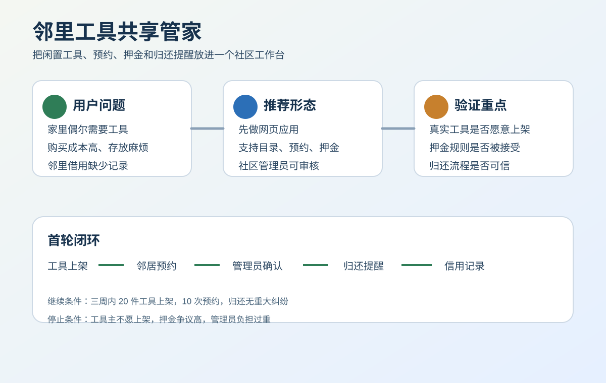

核心结论
建议先验证。这个想法技术上可以轻量实现，但真正风险在工具主是否愿意上架、居民是否愿意预约、押金规则是否被接受，以及管理员是否能持续维护。
交付形态
网页应用，二维码访问，兼顾居民端和管理员端。
验证范围
一个社区、20 件工具、三周试点。
继续条件
10 次预约、8 次顺利归还、管理员每周低于 2 小时。
视觉说明

证据与缺口
- 当前证据主要来自场景推理和产品假设，已经写入内部证据中枢。
- 最大缺口是工具主上架意愿、押金接受度和损坏责任边界。
- 三周社区试点是进入真实开发前的关键动作。
最小可行产品范围
工具登记
名称、图片、说明、可借时间和注意事项。
预约申请
居民提交借用时间和用途，管理员确认。
归还提醒
到期提醒、状态记录和异常标记。
交互原型
原型文件：prototype.html。它展示工具列表、预约表单、管理员审核和归还状态。
下一步行动
- 7 天内找到一个社区管理员，招募首批工具。
- 14 天内开放二维码入口，收集预约数据。
- 30 天内复盘归还、纠纷和管理员耗时。